Business as “Usual”
“It’s business as usual,” someone once said to me.
I am flabbergasted. Nothing about this seemed ‘normal’ to me.
“Well, you’ll figure it out, and let me know if there are issues, right?” Off I went into this known – yet unknown – abyss…
Business as “Usual”
Introduction
This section holds a very dear place in my heart. The questions that administrators and end-users have asked me have enthralled me, and yet conjured tremendous stress for me when it comes to business process changes and how to incorporate them into OneStream. At some point, I noticed that these questions became iterative and repetitive, and I realized I had a baseline to work with; this was a baseline that I needed to share. As such, this chapter contains a compilation of use cases that occur as a company matures and grows.
I want to highlight that this chapter is not meant to be a step-by-step guide on what to do and how to go about handling business process changes. Instead, this chapter is meant to provide information and guidance that you can share with your stakeholders on the appropriate approach for your given application. These “business as usual” processes include:
Intercompany
Cash Flow
Journals
Org-By-Period
Business Acquisitions and Divestitures
New Chart of Accounts
Handling Historical Data Due to New Chart of Accounts
I hope this section helps you and lessens any heartburn you might experience when it comes to business process changes and the impact on OneStream. Pop an antacid and let’s get right into this.
| Disclaimer: The case examples presented in this chapter may not be applicable to every company and its existing processes. Again, the purpose of this chapter is to ensure that the administrator is equipped with the appropriate technical understanding of the efforts behind each of the examples presented. The list of examples is not exhaustive, nor is it meant to be the only list or a complete list. It is recommended that the administrator works with process owners and/or consultants to determine the appropriate technical approach, especially as OneStream continues to add new capabilities or features with each version update. |
Business as “Usual”
“Business as Usual”
I am defining “business as usual” as business process changes that impact the OneStream application. Several of these business process changes could be:
A change in which the system handles business processes with regard to intercompany and/or cash flow.
An enhancement to existing processes such as journals. For example, your company has decided it now needs a separation of duties or additional topsides.
A change in businesses that relates to acquisitions or divestitures.
A fundamental shift in how one would view data going forward, which includes a new chart of accounts and the handling of historical data, as well as Org-By-Period.
I have categorized and organized these cases accordingly.
Business as “Usual” › “Business as Usual”
Intercompany
Intercompany is defined as an activity that occurs between two or more companies that ultimately roll-up to the same parent company. Usually, any sale or expense associated with intercompany is not counted – at the top – as a true sale and, as such, companies go through an intercompany reconciliation process where systems (or folks) verify and adjust these intercompany transactions to ensure that the amounts are properly eliminated when reporting on the overall company’s financials.
This section will cover various intercompany cases (again, not exhaustive) in which the intercompany processes have shifted from an existing system to now being done in OneStream. Thus, the following sections will cover the use of the consolidation members, C#USD and C#Top, and how these members are used to view eliminations, as well as simple examples that showcase how amounts are eliminated going up the entity hierarchy. I hope these cases will give you some insight when you enable your intercompany processes in OneStream.
Business as “Usual” › “Business as Usual” › Intercompany
C#USD versus C#Top
Naturally, we need to address the first question – which consolidation member should I use for intercompany? The answer depends on what you are specifically reporting on or trying to research. If the report is intercompany-specific (e.g., checking that the elimination settings are correct with the proper plugs against the entities), then it is likely that C#Top will be better suited for your reporting needs, especially if you want to view the values at the base entity level in addition to the parent entities. If you do not care for the details at the base entities, then C#USD would be better suited as you would be referencing parent entities.
In the next sections, I will be covering different examples of intercompany and their views at C#USD and C#Top:
What intercompany would look like when the two base entities’ first common parent is not the same as their immediate parent.
What intercompany would look like when two base entities’ first common parent is the same as their immediate parent.
Remember, out-of-the-box elimination functionality in OneStream is to eliminate at the first common parent. The first two cases will show just that when going up the entity hierarchy.
3. For whatever reason, if your source data does not have intercompany partners associated with the records, but you still want to see elimination occur in OneStream, you may decide that the use of a temporary dummy intercompany entity in OneStream may be appropriate. You will still find eliminations using this dummy intercompany entity, but these eliminations will not be at the proper levels in the hierarchies that you would expect. Instead, the eliminations will be the first common parent at wherever you place this dummy intercompany entity in relation to the other entities.
Business as “Usual” › “Business as Usual” › Intercompany
Simple ICP Structure First Common Parent
This section covers a simple intercompany elimination, assuming the starting point has the correct intercompany partner and the entities’ first common parent is not the same as their immediate parent. Below is the view from the debit and credit points of view.
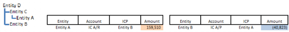
Figure 14.1
If Entity A has an intercompany amount with Entity B of 159,510 for accounts receivable, and Entity B has the payable equivalent of 40,823, then there is clearly a mismatch. The difference of 118,687 will be captured in the plug at the first common parent, which is Entity D in OneStream.
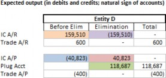
Figure 14.2
If OneStream was not used for intercompany eliminations, the journal equivalents would be:
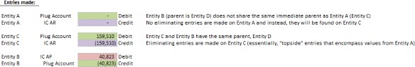
Figure 14.3
Business as “Usual” › “Business as Usual” › Intercompany › Simple ICP Structure First Common Parent
View 1: C#USD
Taking the journal examples above, the following screenshot illustrates how OneStream handles eliminations at C#USD:
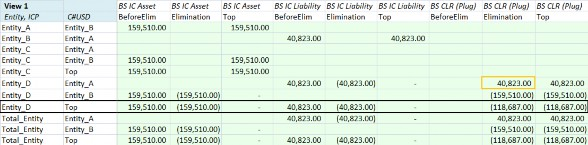
Figure 14.4
The first column represents the entity, while the second column represents the IC dimension. A consideration to keep in mind, depending on your application setup, is the reporting view versus the accounting debits/credits view. The example above has OneStream set to use the financial intelligence and reporting view.
Yellow bolded cell: notice here ICP is
I#Entity_A. This is interpreted as:E#Entity_D, 40,823 atA#[BS CLR]from the intercompany partnerEntity_ABlack bolded row: represents the use of
C#USDatE#Entity_D, which is Entity A and Entity B’s first common parent. Notice the amounts atO#EliminationforA#[IC Asset]andA#[IC Liability]are the opposite amounts of that atO#BeforeElim.
Thus, at O#Top for A#[IC Asset] and A#[IC Liability], the amount is 0. The variance between A#[IC Asset] and A#[IC Liability] is captured in A#[BS CLR], which is the intercompany plug.
Business as “Usual” › “Business as Usual” › Intercompany › Simple ICP Structure First Common Parent
View 2: C#Top
C#Top represents the consolidation trail to track how the starting point – local amount – gets translated and consolidated up to Total Entity, which includes any topside journal entries and eliminations.
The screenshot below represents the two entities, Entity A and Entity B and their consolidation process. Notice that there is no elimination amount found for Entity A with parent Entity C since Entity C is not the first common parent between Entity A and Entity B, while there is an elimination amount for Entity B with Parent D.
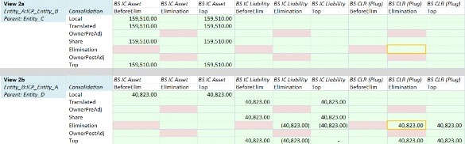
Figure 14.5
Put differently, always keep in mind that the C#Elimination:O#Elimination view is dependent on the parent dimension reference. Even though the immediate parent of Entity_A is Entity_C, Entity C is not the first common parent between Entity_A and Entity_B. Thus, we would expect elimination at Entity_D. Refer to the yellow cells in Figure 14.5.
Continuing up the chain in Figure 14.6, the parent of Entity C is Entity D. Guess what? Entity D is the first common parent between Entity A and Entity B! Thus, at this view, you will find that the amounts are eliminated (View 2c) and that at C#Top, the amount is eliminated at O#Top (bolded orange cells in View 2c).
Lastly, at Entity D with the parent of Total_Entity, you will find the variance of 118,687 at the plug, A#[BS CLR](yellow cell in View 2d), as well as the eliminations for the intercompany accounts (bolded orange cells in View 2d).
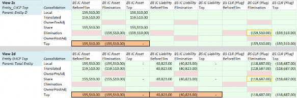
Figure 14.6
Business as “Usual” › “Business as Usual” › Intercompany
Simple ICP Structure Same Parent and First Common Parent
Let’s look at another structure where Entity A and Entity B share the same parent and first common parent using the same amounts and accounts. The eliminations amount is at Entity C, the first common parent.
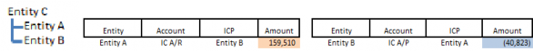
Figure 14.7
If Entity A has an intercompany amount with Entity B of 159,510 for accounts receivable, and Entity B has the payable equivalent of 40,823, then the difference of 118,687 will be captured in the plug at the first common parent, which is Entity C in this hierarchy setup.
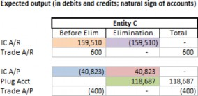
Figure 14.8
If OneStream was not used for intercompany eliminations, the journal equivalents would be:
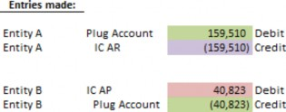
Figure 14.9
Business as “Usual” › “Business as Usual” › Intercompany › Simple ICP Structure Same Parent and First Common Parent
View 1: C#USD
Taking the journal examples above, the screenshot below illustrates how OneStream handles eliminations:
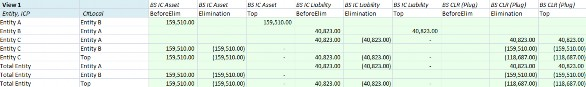
Figure 14.10
The first column represents the entity, while the second column represents the IC dimension. A consideration to keep in mind, depending on your application setup, is the reporting view versus the accounting debits/credits view. The example above has OneStream set to use the financial intelligence and reporting view. Notice that Entity C and Total Entity will contain the eliminations for the intercompany account and the amounts found in the plug with this hierarchy. This is because the entities’ immediate parent is also the first common parent.
Business as “Usual” › “Business as Usual” › Intercompany › Simple ICP Structure Same Parent and First Common Parent
View 2: C#Top
C#Top represents the consolidation trail to track how the starting point – local amount – gets translated and consolidated up to Total Entity, which includes any topside journal entries and eliminations.
The screenshot below represents the two entities, Entity A and Entity B, and their consolidation process to Entity C and finally Total Entity. Because both Entity A and Entity B share the first and immediate parent, you will find that the elimination amounts appear when parent Entity C is referenced for Entity A or Entity B (highlighted orange in Figure 14.11).
Thus, for instances where base entities share the same common parent, eliminations can be found at the base entity with the relevant parent dimension reference. Then, at the consolidation level, Entity C with the parent of Total_Entity, you will find the variance at the plug account as well as the eliminations for the intercompany accounts.
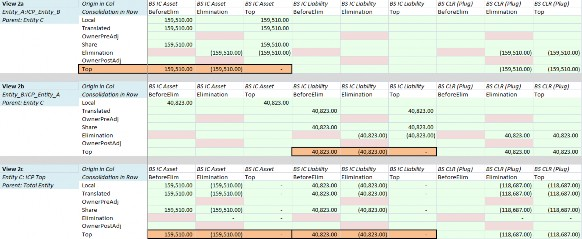
Figure 14.11
Business as “Usual” › “Business as Usual” › Intercompany
Simple Dummy ICP Structure
This section covers an example where, perhaps, you do not have true intercompany partners associated with your source data at the moment, but you want to leverage OneStream’s intercompany process as you figure out how to source true intercompany partners in the future. If this option is used, keep in mind that the eliminations will not necessarily eliminate at the proper levels within the hierarchy as they would with true intercompany partners. Even though we are using a dummy intercompany partner, this does not change how OneStream will eliminate the accounts; OneStream, out-of-the-box, with the proper intercompany settings, will eliminate at the first common parent, which in this case will be found at Entity E. Notice that Entity A’s IC A/R and IC A/P is tagged with Entity B (dummy); this is different to the previous sections where we were assuming true intercompany partners.
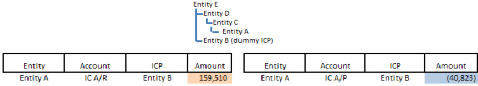
Figure 14.12
Figure 14.13
If OneStream was not used for intercompany eliminations, the journal equivalents would be:
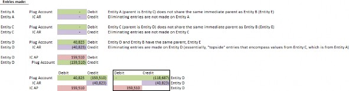
Figure 14.14
Business as “Usual” › “Business as Usual” › Intercompany › Simple Dummy ICP Structure
View 1: C#USD
Taking the journal examples above, the following screenshot illustrates how OneStream handles eliminations:
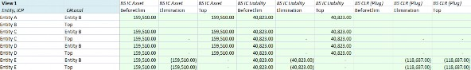
Figure 14.15
Because Entity B (Dummy) and Entity A’s first common parent is not until Entity E, you will not see any plug value or eliminations until you are at Entity E (last two rows), where you can drill into I#Top and see the elimination associated with the dummy intercompany partner.
Business as “Usual” › “Business as Usual” › Intercompany › Simple Dummy ICP Structure
View 2: C#Top
C#Top represents the consolidation trail to track how the starting point – local amount – gets translated and consolidated up to Total Entity, which includes any topside journal entries and eliminations. Because Entity B (Dummy) and Entity A’s first common parent is not until Entity E, you will not see any plug value or eliminations until you reference an entity that has a parent as Entity E. In this case, you will not see elimination amounts until Entity D, with a parent of Entity E.
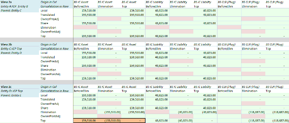
Figure 14.16
I thought it would be useful to cover a view that exists but which does not provide much added value (Figure 14.17). This is where we have Entity E representing Total Consolidated. Notice that Entity E does not have a parent; Entity E is, in fact, the Top Parent. Thus, you would not expect to see a consolidation trail for it; in other words, within C#Top only C#Local is valid, while the remaining consolidation members are considered invalid (as indicated by the red cells).
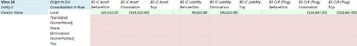
Figure 14.17
Business as “Usual” › “Business as Usual” › Intercompany
No ICP Tagged But Want to See IC Elimination
The most straightforward way is to create a dummy entity to do the elimination as we saw in the section above. This would allow for a transition when your ERP has true intercompany partners assigned.
Some non-straightforward ways are to have several elimination entities specifically created in the Entity dimension, or to have elimination centers as part of the UD. This would require custom elimination rules written into OneStream, which may be more complicated than any effort is worth, especially if you have plans to have a true intercompany partner assigned within your ERP. For these instances, it is highly recommended that you work with the relevant stakeholders, partners, and consultants on the approach.
Business as “Usual” › “Business as Usual” › Intercompany › No ICP Tagged But Want to See IC Elimination
Mapping Considerations
Because the source file would assume that there is no ICP associated with each relevant intercompany account record, there will be a need to leverage transformation rules or some sort of mapping logic to ensure all intercompany accounts are associated with a dummy ICP.
Business as “Usual” › “Business as Usual” › Intercompany › No ICP Tagged But Want to See IC Elimination
Plug Considerations
If there is a need to export or have an outbound integration from OneStream to another system, we will need to be mindful of plug naming conventions if they are not readily available or do not exist in the source file. One suggestion is to first identify the outbound integration requirements. Another suggestion is to leverage a similar naming convention associated with your accounts – for example, if your intercompany account starts with 234 and always has to be 5 characters, and you want all your balance sheet intercompany plugs to be associated with liability, you could consider calling a plug 2340A, and so forth.
Another consideration is the number of intercompany accounts associated with a plug. If you have entangled intercompany accounts, one suggestion is to have the +/- equivalent (two accounts) to one plug instead of having multiple accounts (two+ accounts) to a plug. This will make your research and ability to resolve the variances a little easier.
Business as “Usual” › “Business as Usual” › Intercompany › No ICP Tagged But Want to See IC Elimination
Common Errors
Common errors when updating the application for intercompany eliminations include, but are not limited to:
Transformation mappings: for example, if you were to use composites to force an intercompany partner, you will need to make sure – with each new intercompany account – that you have transformation mappings included. If you are using explicit mappings, you will need to make sure that the intercompany account is captured as well.
Accounts
o Is IC Account = False instead of True? If you do not set an intercompany account to True, the account will not eliminate even if you have plug accounts assigned.
The plug account is missing when there should be a plug account assigned. If an intercompany account does not have a plug assigned, its variance will not be captured with the other pairings.
New intercompany plug accounts: if you are using OneStream’s out-of-the-box Intercompany Matching Report, you will need to update the workflows that are using the report to include the latest set of intercompany plug accounts.
Extensibility: if you improperly extended your member (e.g., it should be in a different layer of the dimensions), you may not see the proper eliminations and/or consolidated amounts.
Entity: Entity members that should never be ICP; ensure the
Is IC Entitysetting is set toFalse. This will limit the number of selectable intercompany partners for users.
Business as “Usual” › “Business as Usual” › Intercompany
Intercompany Matching Report
The out-of-the-box Intercompany Matching Report is found on the workflow as part of the Intercompany Matching Settings section where Matching Enabled is set to True and the matching parameters are populated. If matching parameters need updating, click on the ellipsis icon and you will encounter a pop-up similar to the one below.
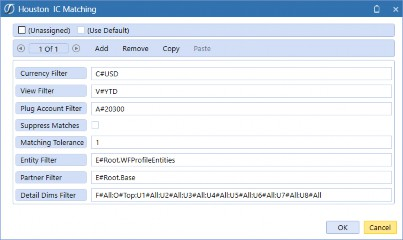
Figure 14.18
If assigned entities are present for the given workflow step, you can simply use the Entity Filter as E#Root.WFProfileEntities. Otherwise, you will need to be explicit with the entities. It is recommended to use Top for dimensions where the details are not important; all will use all details. Ensure that all plug accounts are assigned for every IC grouping.
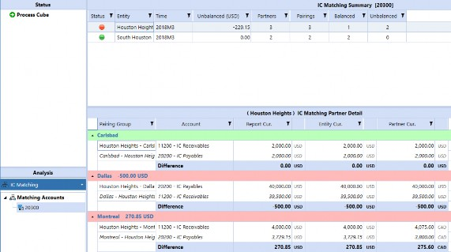
Figure 14.19
The matching report will evaluate the plug account. The report has the ability to translate on-the-fly, but historical/override accounts will not reflect the override for entities not yet translated. In versions 8.1+, the matching report will have a flag on balances that are stored versus translated on-the-fly.
| Note: If there is a matching tolerance assigned to the intercompany matching report, the matching tolerance is simply a number and does not translate. For example, if 100 is your threshold, this means 100 EUR, 100 Yen, 100 USD, etc. will be flagged. |
Business as “Usual” › “Business as Usual”
Cash Flow
Cash flow, ahh, the final financial report that seems to instill a sense of drudgery. This section assumes that you are looking to reduce the manual efforts behind creating a cash flow and seeking to incorporate some sort of automation and transparency in OneStream. If you already have cash flow automated in OneStream, then continue to carry on!
Essentially, the goal of this section is to cover OneStream’s capabilities, functionalities to be aware of, and the pros and cons of each situational case.
If you don’t have the CPM Blueprint application already downloaded, I highly recommend that you do so via the Solution Exchange. It contains a good example of a possible cash flow solution that leverages text fields on the accounts and a business rule. This might be a good starting point if you have a situation where you are starting from scratch.
Business as “Usual” › “Business as Usual” › Cash Flow
Starting from Scratch
Here, the assumption is that you have never really had the need to report on cash flow. How should you think about positioning OneStream to handle cash flow? This requires research on:
Determining mappings of balance sheet activity to cash flow line items.
What is the level of detail that you want users to enter rollforwards? For example, PP&E is common where you might want to describe – in more detail – that a portion related to Retirements goes to one cash flow line, but Additions goes to a different cash flow line.
At what level do you want to enter details for the entity? Do you care that every base entity is accounted for, or would you rather report at the parent level?
At what level do you want to enter account details? Do you want to enter at the base level or more of an aggregated level (which is where extensibility comes in handy)?
Do you plan to leverage the Flow dimension and add in the beginning balance, activity, and ending balance if you have not already done so? You will need
F#Activity, as cash flow is all about the activity of balance sheet accounts!
As a reminder, you can refer to the CPM Blueprint application and its documentation on cash flow. You will find a cash flow business rule, which reads off the text fields of the balance sheet accounts with the corresponding source rollforward line items and target cash flow reporting line items.
When you look at the CPM Blueprint’s Flow dimension, you will notice groupings dedicated to rollforward inputs. Keep in mind that these rollforward members will leverage the Switch Type of True for the portion that represents the details related to overall activity (e.g., RF_PPE_Activity) and FX. The BegBal, FX, EndBal are shared members and referenced in F#BalSheetFlows.
Most importantly, for rollforward purposes, the aggregation weights are -1 for BegBal, RF_PPE_Activity and FX, while it is 1 for EndBal. This allows you to use RF_PPE to represent any variances due to the aggregation.
You will also notice on the balance sheet accounts that there are values in the text field suited for cash flow purposes. The cash flow rule will parse based on the special characters used to differentiate which piece is the source and which piece is the target.
From here, you can work with the relevant stakeholders to identify your company’s desired cash flow reports, rollforwards inputs, and mappings, which can then be handled as text fields and a business rule which is similar to that of the Blueprint. Below is a list of pros and cons to this approach; again, the list is not exhaustive.
| Pros | Cons |
|---|---|
You have an opportunity to create a less manual, more automated cash flow process within OneStream. You can review the cash flow setup of the Blueprint application and determine if that is a good fit for your company’s requirements. If it is a fit, I consider this a pro as it would give you a framework to work with. | The research and effort required to identify the mappings and subsequent efforts to validate and test the cash flow process. This will require a deep understanding of the existing data set and how that should be used to produce the resultant cash flow statement. |
Figure 14.20
Business as “Usual” › “Business as Usual”
Journals
This section covers common business cases on topside entries, setting up a separation of duties (if you have not done so already or are now considering a separation of duties), and other journal functionalities that will relate to the use of a JournalsEventHandler (extensibility rule).
Business as “Usual” › “Business as Usual” › Journals
Use of Journals for “Topside” Entries
Let’s say you have a parent entity that needs to reflect an adjustment of $100 via a journal. Where do you put this amount? This $100 amount is considered a topside entry, and we have ways to handle this in OneStream:
Entries booked to an existing base entity that changes what users want in the parent entity.
Entries booked to a parent entity, which OneStream allows for adjustments to a non-base entity.
Adjustment-only base entity that represents the entity to be used only for these adjustments.
With these three options, keep in mind that reorganizations of the entity structure (e.g., if base entities change parents, parent roll-ups change, or alternate structures change) will see users having to re-assess and validate existing journals and identify whether further updates and/or adjustments are needed. In an ideal world, topsides should be handled as adjustments to handle timing differences during the close process and then the journals should be made in the ERP such that they are already reflected for the next period.
Business as “Usual” › “Business as Usual” › Journals › Use of Journals for “Topside” Entries
Entering at Base Entity
The most straightforward way is to choose a base member as the representative entity for topside entries, and the amount will then get aggregated to the parent. You could have a journal template called Topsides to further differentiate cases where the journals represent topside adjustments.
| Pros | Cons |
|---|---|
| This approach sees amounts and aggregations consistently make sense. | The entry isn’t made at a true parent entity. |
| The base entity will reflect this journal in its balances, depending on the POV. | |
| If you have entity assignments enabled on your workflow where this journal adj step resides, you may be required to unlock or uncertify completed workflows. |
Figure 14.21
Business as “Usual” › “Business as Usual” › Journals › Use of Journals for “Topside” Entries
Entering at the Parent Entity
This represents an adjustment done at the parent level with no impact on the base entities. Parent entity adjustments are tracked through the Origin member where users can view the adjustments made at base entities and parent entities. See the example below in Figure 14.22:
Figure 14.22
Observe the journal entries made to base entities Houston Heights and South Houston at AdjInput – and how they total 11,000. Notice, however, that they do not aggregate to Houston. Instead, this 11,000 will be reflected at O#AdjConsolidated at the parent entity, Houston.
If there is the need for a topside entry at US Clubs, this can be done through a topside journal entry and topsides will be found at the parent entity and O#AdjInput. When drilling down on the Origin member, users can determine which originated from journals (AdjInput), the values consolidated (AdjConsolidated), and how the values roll up to O#Top.
Note: this approach will likely create confusion for users and will require training and change management. For example, if a user is at For the correct view, the user would need to drill down on Origin instead and realize, “Oh! Okay, it looks like – at AdjInput – we had some journals for “So, if we took the |
| Pros | Cons |
|---|---|
| This approach represents a true topside parent adjustment, done at the parent entity. In other words, an entry here will not affect base entities’ data and there will be no need for additional adjustment entities. | This will require user training and change management to prevent user confusion when users are querying intersections. |
Figure 14.23
Business as “Usual” › “Business as Usual” › Journals › Use of Journals for “Topside” Entries
Entering at Adjustment-Only Entities
If you do not want these topside entries to co-mingle with your entities that have data from your source systems, another method is to create a group of adjustment-only entities. In other words, these would be dummy entities whose sole purpose is to store journal-related data.
| Pros | Cons |
|---|---|
| An entry to the adjustment-only entity will not affect base entities’ data, while aggregation to the parent makes sense. | The entry isn’t made at a true parent entity. |
| If you have entity assignments enabled on your workflow where this journal adj step resides, you may be required to unlock or uncertify completed workflows. |
Figure 14.24
Business as “Usual” › “Business as Usual” › Journals
Updating the Journal Process
This section assumes that you have an application where you are actively using journals and it is either 1. set up with Quick Post and/or 2. users can be both the submitter and poster and/or 3. you have journals set up without a formal approval process in OneStream.
Now that your company has grown, however, there is an ask for a separation of duties and/or a new process where the submitter and approver cannot be the same person.
Business as “Usual” › “Business as Usual” › Journals › Updating the Journal Process
Separation of Duties and the Use of Workflow Security Groups
A separation of duties is differentiated with the workflow security groups found on the adj step. For versions 8.0+, a business rule is no longer needed to prevent self-posting or self-approving; they will be available as drop-down selections, as presented in Figure 14.25.
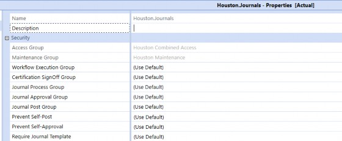
Figure 14.25
Access Group is typically everyone or the group that should see the data in the assigned journal step.
Maintenance Group should almost always be administrators.
Workflow Execution Group: those who can complete the workflow.
Certification SignOff Group: those who can certify (assuming that certify is part of the workflow).
Journal Process Group: the group that can create journals.
Journal Approval Group: the group that can approve journals.
Journal Post Group: the group that can post the journals.
Submitter, Approver, Poster
If you want someone who can submit, approve, and post (no separation of duties), you will need to ensure that the person is within each of those groups (Journal Process Group, Journal Approval Group and Journal Post Group) or that the same group is used for all three settings.
Submitter + Poster, Approver
If you want someone who can submit and post but who cannot approve their own journals, then you will need to ensure that the person is within Journal Process Group and Journal Post Group; or if you know that every submitter will also be a poster, then you can use the same group for Journal Process Group and Journal Post Group. Furthermore, you will have the Prevent Self-Approve option in the Workflow Profile to prevent self-approvals.
Submitter + Approver, Poster
If you want someone who can submit and approve but cannot post his or her own journals, you will need to ensure that the person is within Journal Process Group and Journal Approval Group; or if you know that every submitter will also be an approver, then you can use the same group for Journal Process Group and Journal Approval Group. You will have the Prevent Self-Post option in the Workflow Profile to prevent self-posts.
Business as “Usual” › “Business as Usual” › Journals › Updating the Journal Process
Submitter and Approver Cannot Be the Same Person
If you need to ensure the submitter and approver cannot be the same person, this will likely have to be handled as part of the journal events handler for applications that are not on at least 8.0. For those on at least 8.0, a custom rule is no longer needed, and this functionality is assigned directly on the workflow.
Business as “Usual” › “Business as Usual” › Journals › Updating the Journal Process
I Want to Send Emails About These Journals
If there is a need to send emails about journals, this will require a setup on the users’ settings, specifically those who should be receiving the emails. For example, if all approvers should receive an email that a certain journal is ready for their approval, then the JournalEventHandler rule needs some indication that the user should be receiving the journal (e.g., either the rule references the security group or a text field).
If you opt to include a PDF attachment of the journals to be sent, you will need to build this PDF out in the dashboard with the relevant components and then have it associated with the rule.
Business as “Usual” › “Business as Usual”
Org-By-Period
Org-By-Period is used to handle applications with periodic consolidation where you do not want historical data to be reflected with the latest hierarchical changes. This is distinct from reorganizations, which we commonly define as re-shuffling entities and their roll-ups, and where you want historical data reflected in the latest structure. Essentially, to enable Org-By-Period, you would need to maintain alternate entity structures with the relevant Percent Consolidation varied by the appropriate Scenario Type and time. In addition, Org-By-Period Elimination will be used as part of the Consolidation Algorithm Type instead of standard, as reflected in Figure 14.26.
Furthermore, you will need to ensure that the Consolidation View on the scenario member is set to Periodic, which tells OneStream to consolidate into the parent on a monthly basis instead of moving its YTD balances.
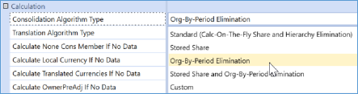
Figure 14.26
| Note: A business rule will need to be written to pull forward the elimination YTD when no data is loaded to an IC member. |
Refer to the Design and Reference Guide and Foundation Handbook’s Consolidation section for more information.
Business as “Usual” › “Business as Usual”
Business Acquisitions
Congrats! Your company has decided to acquire another company AND has tasked you with incorporating this new company into OneStream! This section will cover (at a high level) external reporting purposes and the common situations associated with a business acquisition; there is also a separate section dedicated to pro-rata management reporting. Remember, the situations described below are not considered to be an exhaustive or complete list.
Business as “Usual” › “Business as Usual” › Business Acquisitions
Acquired Company Continues to Use Its Own Ledger
When I say “own ledger”, what I really mean is that there is some agreement that the acquired company will continue to use its existing ERP system(s) and its existing chart of accounts structure, which could be entirely different to the parent company. Thus, I would assess the following:
Will this acquired company be handling its own data load to OneStream, or is this acquired company passing the file to your company to do the load?
Regardless of who does what, it is good to define the process now that the acquired company will be reporting to your company.
This approach would likely necessitate a separate data source, transformation profiles, and Workflow Profiles.
How different is this company’s chart of accounts, and by “continues to use its own ledger” – what does that mean on the reporting front?
Does this mean – for reports out of OneStream – the acquired company is expected to see the numbers in its chart of accounts?
Or are we simply saying they want to load in their chart of accounts but are alright with the output in the parent company’s chart of accounts?
Does the company use the same fiscal calendar year?
What OneStream can provide, again, is a lot of flexibility. The below list is not exhaustive but offers some options to consider when integrating this new business into OneStream:
New Extensibility and New Cube: assess which dimensions should be extended. Adding extended dimensions would involve adding a new cube where you can apply the extended dimensions. This cube could be set for the acquired company to use. This could be an approach if there aren’t any immediate or foreseeable plans that the acquired company’s chart of accounts will be moving to the parent’s chart of accounts for reporting.
New Data Source and Workflow to Existing Cube(s): if it is determined that the
acquired company will report using the parent’s chart of accounts but will continue to use its chart of accounts for loads, perhaps adding a new data source with mappings and a Workflow step would be sufficient.
Creation of calendars: this may involve a separate Entity dimension, separate Scenario dimension, and custom time profiles specific to this differing fiscal calendar.
Business as “Usual” › “Business as Usual” › Business Acquisitions
Same Underlying ERP, But Acquired Company is Not Familiar with the Chart of Accounts
There are two main scenarios I see:
1. The acquired company is willing to change/update its ERP to align with your ERP and/or go onto your ERP. Where no one is familiar with the efforts of transitioning or combining
ERPs, you could provide them with an Excel helper that shows the mapping between acquired company charts and parent company charts as it updates its ERP.
2. The acquired company decides to keep its ERP as is, but will start using OneStream for all of its reporting in the new chart of accounts instead of its ERP or other EPM tool. This approach would be similar to what is already mentioned in the section above and dependent on the level of detail needed for reporting.
Generally, it takes time for the acquired company to acclimate to the acquisition and processes. The above suggestions are on the longer time horizon and the Acquired Company would not be expected to complete things quickly as part of reporting their financials to the parent company’s totals.
Business as “Usual” › “Business as Usual” › Business Acquisitions
Impact on OneStream Consolidation Process
Let’s say that you have figured out how to source the new business acquisition, whether it’s a flat file, direct connect to the ERP, inputs, or whatnot. Generally, I am assuming there is a process already in place to handle these changes in OneStream, so I’ll cover the general changes needed at a high level:
Has the proper metadata been set up for the new acquisition?
Entity: are the consolidation percentage and ownership set accordingly? Remember, you can use Vary by Scenario and Period.
Accounts: are the accounts from the acquisition’s file already in OneStream with
the proper settings?
Flow: if you are leveraging the beginning balance, activity and ending balance in the Flow dimension, do you have a beginning balance acquisition member or ending balance member to kick off the proper beginning balance/ending balance as of the date the acquisition’s data comes in?
Remainder: are the remaining dimensions updated to accept the acquisition’s data?
If you have custom eliminations or advanced consolidation (e.g., complex ownerships), did you make those updates? Depending on how these rules were set up, you may need to make manual updates to the rules or update the metadata with certain text fields, etc.
Are currency and FX rates accounted for?
Are Workflow Profiles and security up to date?
Are the remaining reports and inputs up to date? (e.g., consolidated financials, overrides, journals, etc.)
Does management reporting include pro-rata reporting?
Business as “Usual” › “Business as Usual”
Business Divestitures
Congrats (again?). Your company has decided to sell a company and has tasked you with removing this company from OneStream!
What does this mean for you now that this company is off your books? Well, you have a few extra licenses on hand to distribute to folks within your company.
From your end, it is very likely that the divested company will still have data existing in your general ledger, which gets imported into OneStream, and you no longer want the data reflected in OneStream after some point in time. Within OneStream, I highly recommend leveraging the In Use settings and Vary by Scenario Type settings.
Each OneStream application is set up differently, so I’ll cover some general setups I have seen:
Some applications leverage text fields in the Entity dimension, and tag whether that entity is considered a discontinued operation. There could also be a custom dimension dedicated to data type (e.g., discontinued operations adj or something else) to handle reclasses. These
reclasses, with the data type and Entity dimensions, allow users to view totals as if the entity were still operating for the selected period(s). There could also be a custom finance rule in the background to handle the reclasses.
Set the entity’s Percent Consolidation to 0% using Vary by Scenario Type; you can specify the specific date where Percent Consolidation will be 0% going forward. Depending on where this entity sits, you may need to update in the linked cubes and top cube.
If you decide to continue to load data, you may need to consider additional security (e.g., same balances as of X date until the end of the year). This may be relevant if you have additional MarketPlace solutions like Account Reconciliations.
If you decide not to load data after a point in time, then you may need to consider journal adjustments to the end of the year. This may be relevant if you have additional MarketPlace solutions like Account Reconciliations.
Furthermore, if this divested company had associated Workflow Profiles, you would need to go ahead and update security groups and users who were part of the divested company. This means setting the users as inactive and setting the Workflow Profiles as inactive.
Business as “Usual” › “Business as Usual” › Business Divestitures
Impact on OneStream Consolidation Process
Overall, from the parent company’s perspective, you want to ensure that the entity is no longer consolidating to the total after X date, and that relevant business rules that could contain this entity’s data are updated. This can be done through the Percent Consolidation setting or by bypassing the data loads containing the entity reference.
Business as “Usual” › “Business as Usual”
Pro-Rata of Business Acquisitions and Divestitures for Management Reporting
With a business acquisition or business divestiture, your company’s management may require some sort of pro-rata reporting that extends back 12-13 months for comparative reporting purposes. As mentioned repeatedly throughout this chapter, it is recommended that you work with the relevant stakeholders and consultants to determine the appropriate handling for pro-rata reporting.
At a high and general level, pro-rata reporting involves a separate set of data, handled by separate Scenario Types and/or if you already have a UD dedicated to data source or data type, you could have a member that sits as a sibling to the node that represents external/GAAP reporting; this way, you are able to view your data with or without the acquisition(s) or divestiture(s).
Business as “Usual” › “Business as Usual”
New Chart of Accounts
The chart of accounts refers to the naming convention that organizes your financial information. For example, you could have XXX-YYY-ZZZ, in which XXX represents your accounts, YYY could be your cost center, and ZZZ could be your country.
Depending on where your company is, and where your company wants to go, you might find yourself in a huge financial transformation, where your company decides to revamp everything related to your financial statements. Everything is going to change, from your ERP to your CPM. What do you do?
A few items to keep in mind and address:
Do you have a plan to adequately test the new chart of accounts and compare it with your old chart of accounts?
Is there a timeframe in which your company plans to transition to only the new chart of accounts?
What about historical data in the old chart of accounts? Are there plans to “re-state” the data in the old chart of accounts into the new chart of accounts, or are people going to keep the old data in the old chart as is, and effectively have a time range where comparative reporting will not be possible?
What about change management? Are your users ready? Are you ready?
Do you have a design in mind, and do people agree with it?
What could possibly go wrong?
With OneStream, we can look at a few considerations (remember, this is not an exhaustive list). These cases are options that companies have considered and had to assess the implications of. I have listed these cases based on complexity, from the most straightforward to the least.
Complete application redesign and build.
Use of separate dimensions and separate Scenario Types.
Keep everything in the same dimensions.
I am hoping that, at least with these cases, you can jot down a few ideas on how you want to approach your OneStream application and facilitate the transition from your current chart of accounts to a new chart of accounts. Again, I cannot emphasize enough that I highly recommend you work with your stakeholders and consultants on the appropriate approach.
Business as “Usual” › “Business as Usual” › New Chart of Accounts
Complete Application Redesign and Build
If you plan to use the new chart of accounts going forward, and the old chart of accounts is no longer going to be used, then starting out with a blank application is a viable option. Some folks have told me this is the preferred way, and I can see why… it is a pain to transition from an old chart to a new one because you essentially rebuild it anyway. If you must rebuild, you might as well start with a clean slate!
Business as “Usual” › “Business as Usual” › New Chart of Accounts
Use Separate Dimensions and Separate Scenario Types
This situation sees the creation of a completely new set of dimensions associated with a different Scenario Type. These dimensions will then exist in conjunction with the current set of dimensions.
Why would you want to consider this an option? Well, you could run into a situation where you have an active build that is still in the old chart of accounts, and management wants you to start considering the use of the new chart of accounts. You could have ongoing plans where new build items – as of a certain date – need to be in the new chart of accounts, all while you still need to figure out how to transition data from the old chart of accounts to the new one.
What does a new set of separate dimensions provide?
| Pros | Cons |
|---|---|
| You can switch out Scenario Types on your scenario members. | You will have two sets of Actuals with different charts of accounts that will exist in your application until you decide to clear or re-state the old to the new chart of accounts. |
| If you need to compare old and new charts of accounts, you can do so by using Scenario Types and using the same application for comparison. | If you decide on one scenario to represent Actuals, you may need to consider a data copy or some mechanism to bring over the data the scenario used for the new chart of accounts; or if your company ultimately decides to convert all necessary historical data to the new chart, then you could take the old scenario and rename it as Actual_Old and rename the Actual_New as Actual – this may require communication and timing considerations for users active in the application. |
| Pros | Cons |
|---|---|
| Retains audit history of all submitted data if you decide to copy the amounts to the new chart of accounts’ Scenario Type(s) | Metadata and data management will require vigilance. If your new chart of accounts ends up with a naming convention that exists in the old chart of accounts, you will need to go through all artifacts (e.g., Cube Views, transformation rules, business rules) and update accordingly. |
| If you differ by Scenario Type and you have formulas by Scenario Type, they will all have to be updated to the appropriate Scenario Type. |
Figure 14.27
Once all the relevant pieces are fully transitioned to the new chart of accounts, you will also need a cleanup period to remove all the old chart of accounts-related artifacts and data. This will include all historical data in the old chart, data sources, transformation rules, Cube Views, dashboards, etc. The complexity with this option comes down to tracking, organizing, and maintaining the flux of changes between the old chart and new chart for all pieces in the application.
Business as “Usual” › “Business as Usual” › New Chart of Accounts
Keep Everything in the Same Dimension(s)
When I say ‘keep everything in the same dimension(s)’, this is not the same thing as extending the dimensions that I mentioned above. What we are really talking about is using the existing dimensions and adding a new hierarchy that represents the new chart of accounts. Something that could look like this:
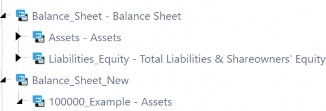
Figure 14.28
What are the implications of this setup?
Well, what are you going to do with the old chart of accounts, which – in this case – would be Balance_Sheet? This Balance_Sheet structure will, at some point, be replaced with Balance_Sheet_New and all members, both base and parents, will need to have unique names that do not already exist in the given dimension. If you determine that there are a handful of members that will continue to use the same name, then you need to be mindful of data conversion.
Furthermore, you will need to decommission the old chart of accounts. You could do so by setting every single member as In Use = False and you could further specify the In Use by Scenario Type and time. However, this will not prevent the user from seeing the old chart when they select a member, whether that is in their POV or Quick View for ad hoc analyses. If you want to prevent users from not seeing these members at all, then the Display Member Group should be set to a group like Nobody instead of Everyone. Remember that you cannot vary the Display Member Group by time or Scenario Type, so this will be an all-or-nothing situation.
In Use = False can be varied by Scenario Type and time; existing data will remain, no new data will be allowed, and the cell goes invalid. Users will still be able to see the members in the hierarchy, though, if Display Member Group is not updated accordingly.
Alternatively, you could decide to remove the old hierarchy altogether but, again, this removal would be dependent on your company’s decision on how to handle historical data (e.g., data continues to be old or did all the data convert to the new chart of accounts?).
This ultimately creates a concern: is this approach really going to be a clean transition from the old chart of accounts to the new one?
This approach presents a series of pros and cons (again, not exhaustive):
| Pros | Cons |
|---|---|
| Minimal updates to the dimension names referenced in your artifacts (e.g., business rules, queries, Cube Views, etc.). | Even though you may not need to change the dimension name in which your new hierarchy resides, you will still need to go through all artifacts and update the member names that are part of the new hierarchy. |
| Will increase query times for reports. For example, if you have a dimension of 10,000 cost centers and you added another 5,000 cost centers that will be in your new chart of accounts. | |
| This will also increase consolidation times. | |
| Comparative reporting becomes a pain. You could have issues comparing historicals (old chart) to the new chart, where there could be many-to-one mappings. | |
Two charts of accounts exist in the same dimension and will be visible to users if you decide not to also update the Display Member Group. Even if This could cause user confusion. A user could pull an old chart of accounts member and the query would return a ‘blank’ amount. The user might ask why, only to realize that the member is in the old chart of accounts. |
Figure 14.29
Business as “Usual” › “Business as Usual”
Handling Historical Data Due to New Chart of Accounts Changes
This section specifically covers the choices for handling historical data due to new chart of accounts changes. The historical data conversion significantly impacts data validation efforts.
Business as “Usual” › “Business as Usual” › Handling Historical Data Due to New Chart of Accounts Changes
Same Source File and New Transformation Rules
For this option, there are a few assumptions:
You have the flat file on hand, or the direct connect, enabling you to go back and reload the exact same source data for the given period.
The restatement is impacted at the base level where the amount was initially mapped to a certain base intersection, but now needs to be moved to a different base intersection.
If you meet the above conditions, you could leverage a new set of transformation rules and a new Workflow Profile, which denotes the historical restatement, or you can swap out the transformation rules profiles for the existing Workflow Profile. As always, any time there is a reload and revalidation with new mappings, you would need to validate that the output is correct.
| Pros | Cons |
|---|---|
| You only need to create a new set of transformation rules and transformation rule profiles and attach them to the existing workflow import step. | If your source file or connector brings in a large volume of data, this could involve painful processing times for however many past periods are impacted. |
Figure 14.30
Business as “Usual” › “Business as Usual” › Handling Historical Data Due to New Chart of Accounts Changes
Data Export and New Transformation Rules
This approach involves taking a data export of the existing cube data and then setting up a new data source to import this file with the new transformation mappings. This case would be straightforward and relatively quick if you know that the data volume within your application is not voluminous. Similar to the case above, you could have at least two sets of mapping profiles: 1. the existing transformation rules profile that represents the existing set of mappings, which would be considered the old chart of accounts, and 2. the new transformation rules profile that represents the new chart of accounts.
For this option, there are a few assumptions as well:
You have a OneStream application that has validated data that you are seeking to retransform into the new chart of accounts.
You do not require to have the true source files retransformed. In other words, whatever is in OneStream can be retransformed to the new chart of accounts.
After the data exports, you will be removing the data in the old chart of accounts. The application will not and does not use this data.
| Pros | Cons |
|---|---|
| Exported historical data has already been validated, so you can limit validation errors to the mappings (this is a little different than the case above as the source files could contain several hundred mappings, whereas this case’s mappings will likely be simpler). | This approach involves additional steps such as 1. creating the data export, 2. setting up a new data source to handle the import of the exported data file, 3. new transformation rules, 4. creating a new workflow import step and attaching the new data source and transformation rules profile, or leveraging the existing workflow import step and swapping out the data source and transformation rules profile. |
| If your existing data per period in OneStream is of high volume, this approach could involve painful processing times for however many past periods are impacted. |
Figure 14.31
Business as “Usual” › “Business as Usual” › Handling Historical Data Due to New Chart of Accounts Changes
Data Connector and Possible FDX Queries
This approach involves writing a connector rule, setting up the data source with the connector, creating new transformation rules, and then associating them with your relevant workflow import step. Depending on which cubes are impacted by the historical restatement, and the extent to which your cubes are extended, you may need to also include an FDX query.
FDX stands for Fast Data Extract and is only available for 5.3+ releases. An FDX setup also involves writing in VB.NET. The most common ones are covered in the Foundation Handbook. If existing FDX queries fit your restatement needs, you could leverage these rules as part of your overall connector rule(s).
Similar to the two cases above, you have at least two sets of mapping profiles: 1. the existing transformation rules profile that represents the existing set of mappings, which would be considered the old chart of accounts, and 2. the new transformation rules profile that represents the new chart of accounts.
| Pros | Cons |
|---|---|
| Minimize human error as we have the system pull from Stage. We have the flexibility to set up the connector to pull pre-transformed data or transformed data. | Connector rules require you to know how to set one up (e.g., are you going to leverage Workflow Profile text fields or existing workflow import names?) and/or you have an existing connector rule to leverage, and you have a good understanding of VB.NET. |
| Extract and upload times are minimized because the connector is pulling directly from Stage. Reduces the level of manual loads. | You also have to be familiar with setting up FDX queries and know how to link possibly both the FDX queries with the connector rules. |
| If you clear out the old data from Stage, then you can no longer use this as a valid method for re-import. This will be problematic if there is a point in time when you need to go back and re-import this data. |
Figure 14.32
Business as “Usual”
Conclusion
This was a big chapter, where we covered topics related to business process changes that could impact the OneStream application. These business process changes could involve alterations in the system for intercompany and/or cash flow (where you now want them in OneStream), enhancements to your existing processes (such as the separation of duties to your journals or additional topside capabilities or Org-By-Period), business acquisitions and/or divestitures, or simply a fundamental shift in how your company plans to view data going forward via a new chart of accounts and the handling of historical data.
After reading this chapter, you are now equipped with the knowledge to assess and work with your team and counterparts on how to incorporate various business processes into your OneStream application, all the while maintaining existing processes!